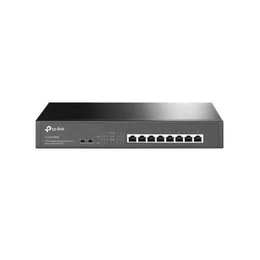
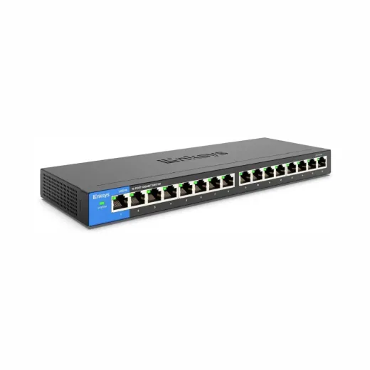
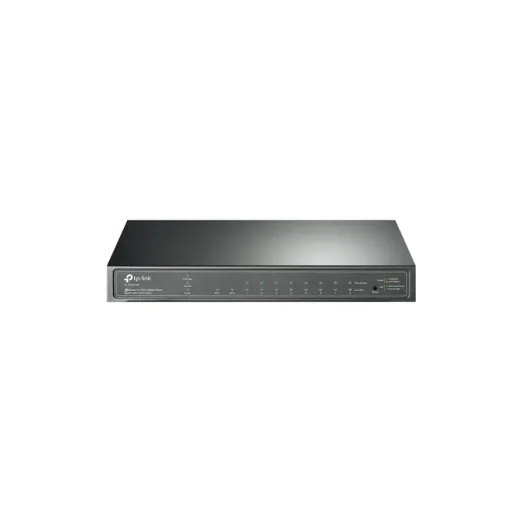
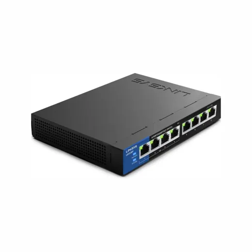
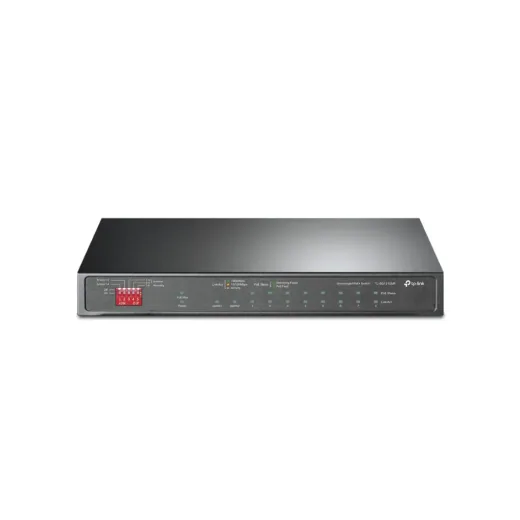
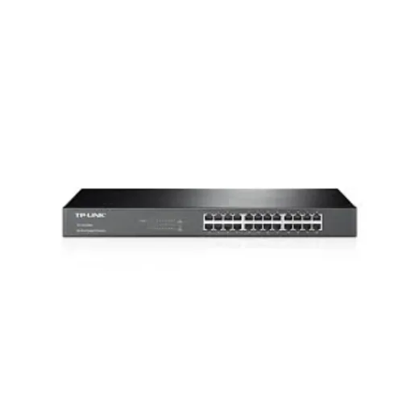

Inicio › Otros de tecnología y hogar

Puertos · Modelo TLSG1008MP
Switch de 8 Puertos TPLINK TL-SG1008MP POE 153Watt Gigabit Rackeable
L 2,795.01
En Sycom
Precio en cada tienda
| Tienda | Precio | Antes | Disponibilidad | |
|---|---|---|---|---|
| Sycom | L 2,795.01 | — | Disponible | Ver en tienda › |
Precios referenciales tomados de cada tienda el 14 de noviembre de 2026. El precio válido es el que muestra la tienda al comprar.
Otros otros de tecnología y hogar Puertos

Switch de 16 Puertos Linksys LGS116 Gigabit DesktopL 2,895En Sycom
Switch de 8 Puertos Gigabit con 2 SFP+ TPLINK OMADA JetStream TL-SG2210P Rackeable POE 61WL 2,950En Sycom
Switch de 8 Puertos Linksys LGS108P 4 Puertos POE+ y 4P Gigabit DesktopL 2,995En Sycom
Switch de 10 Puertos TPLINK TL-SG1210MP Gigabit 8 x POE 123WL 3,195En Sycom
Switch de 24 Puertos TPLINK TL-SG1024 Rackeable GigabitL 3,200En Sycom Switch de 10 Puertos TPLINK TL-SG1210P Gigabit 8x POE Total Max 63WL 2,300En Sycom
Switch de 10 Puertos TPLINK TL-SG1210P Gigabit 8x POE Total Max 63WL 2,300En Sycom Switch de 16 Puertos TPLINK TL-SG1016D DESKTOP GigabitL 2,185En Sycom
Switch de 16 Puertos TPLINK TL-SG1016D DESKTOP GigabitL 2,185En Sycom Switch de 16 Puertos TP-Link GIGABIT TL-SG116L 2,150.01En Sycom
Switch de 16 Puertos TP-Link GIGABIT TL-SG116L 2,150.01En Sycom